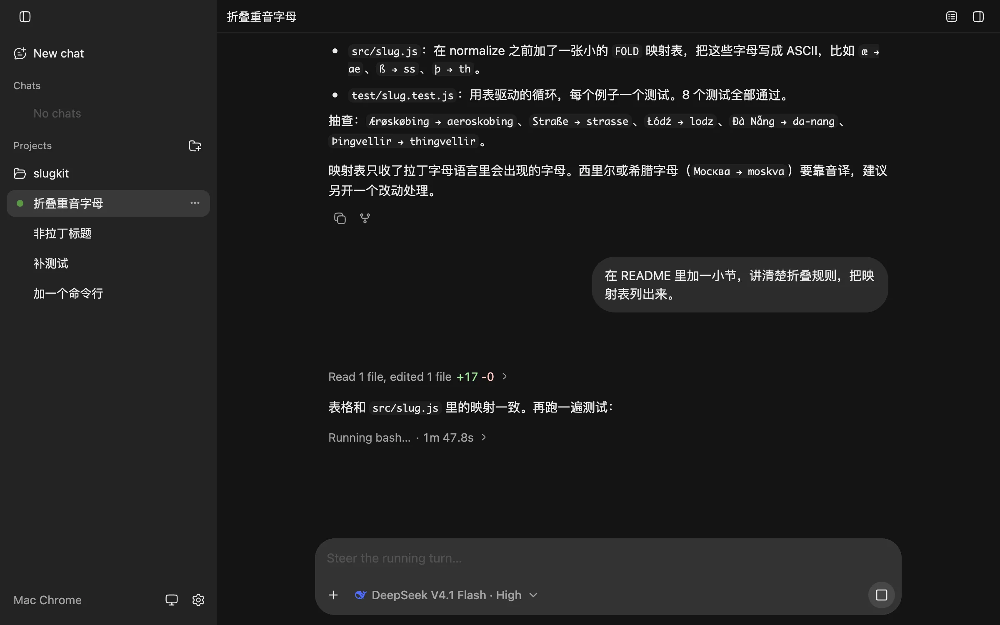
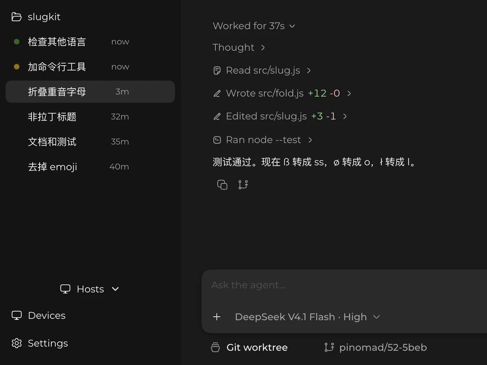
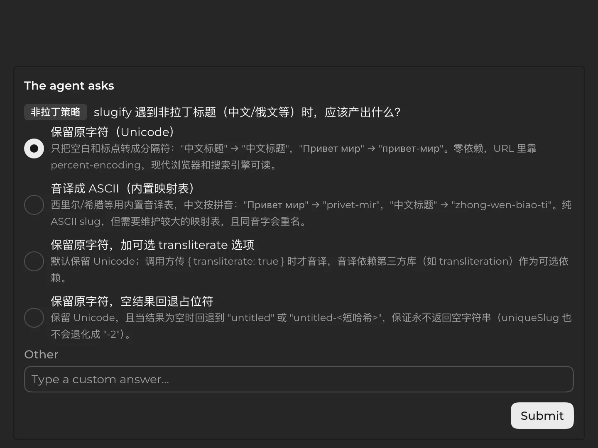
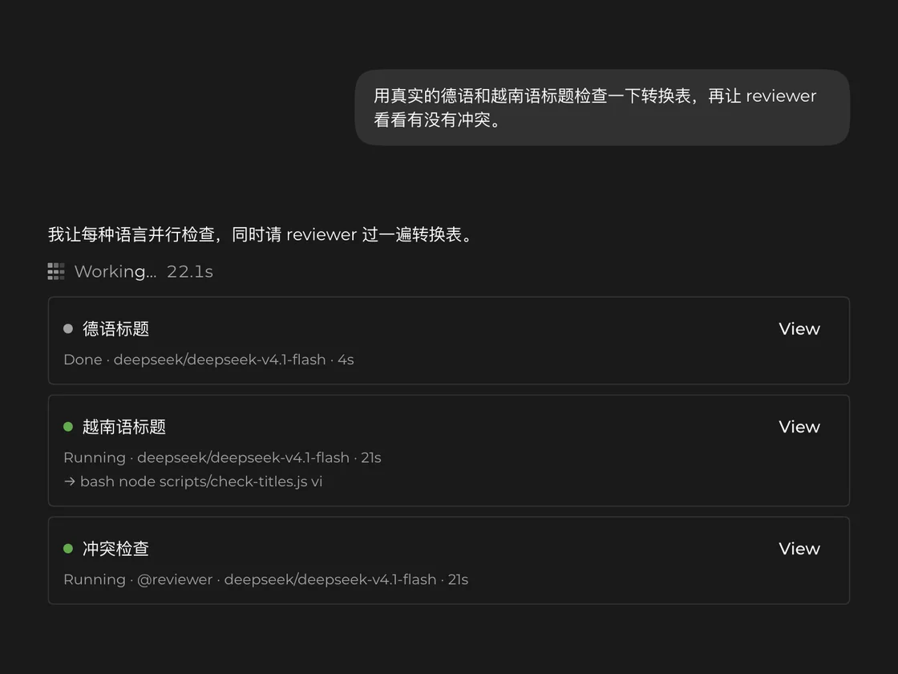

崩溃重启也不丢进度的 coding agent
PiNomad 跑在你自己的机器上，用那台机器的 shell 和代码仓库，每次模型调用和工具调用都存检查点：宿主崩溃或重启后，任务从停下的地方接着跑。Mac App、Web 和 iPhone App 连的是同一批运行中的任务。
- Anthropic
- OpenAI
- DeepSeek
- xAI
- Mistral
- 通义千问
- Kimi
- 智谱 Z.AI
- MiniMax
- OpenRouter
- GitHub Copilot
- 另有 17 家

哪块屏幕都行
离开电脑也能接着管
在电脑前开个任务，出门用手机看进度、插话调整方向。设备扫一次性二维码配对，和宿主之间走端到端加密的通道。
- 直连：局域网或 tailnet
- 中继：只看得到密文
崩溃恢复
崩溃、重启都不丢进度
Pi Durable 会给每次模型调用和工具调用存检查点，宿主重启后从断掉的地方接着跑，不用从头再来。
一个任务画成一条由模型调用和工具调用组成的路线，每完成一步插一面旗。宿主在两步之间崩溃，重启后从最后一面旗接着跑，只有做到一半的那一步要重做。
功能
agent 能做什么
工具和 pi 一样是 read、bash、edit、write 四个，另外还有：
每个对话一个 worktree
Git 仓库里每个对话在自己的 worktree 和分支上干活，你的检出不会被动到。

提问代替审批
工具执行前不弹审批；方向拿不准时，agent 会提 1–4 个选择题。

子代理和具名 Agent
把自成一体的任务交给并行执行的子代理，或者用 @名字
派给一个可复用的角色，可选锁定它的模型和思考等级。

还有这些
- Fork
- 从某条消息分出去，两条线各自往下聊。
- codemode
- 模型写一段 JavaScript，在 QuickJS 沙箱里调用其他工具，只有脚本的输出进入上下文。
- MCP
- 在
~/.agents/mcp.json里配置 server，格式就是常见的mcpServers。 - 图片
- Web / 桌面端输入框可粘贴、拖入或选图，一条消息最多 4 张。
- AGENTS.md 和 skills
- 每次请求都会读
~/.agents和项目里的AGENTS.md/CLAUDE.md与 skills。
客户端
同一个任务，在哪都能接着看
-
Web
打开 app.pinomad.si，或者用宿主自己提供的 Web 客户端（
pinomad link）。现代浏览器都能用。 -
macOS
GitHub Releases 上签名过的 DMG，会自动更新。
Apple 芯片 -
iOS
扫一次性二维码和宿主配对。
目前只在 TestFlight 内部测试 -
Linux、Windows
用 Web 客户端。
快速上手
三条命令跑起来
宿主需要 Node 25+，支持 macOS 和 Linux。
pinomad host 用你在 pi 里配好的模型和认证（~/.pi/agent）。还没配过
pi？pinomad host --faux "hi" 会用一个脚本化的假模型跑起来，可以先点点看。
还在早期，迭代很快。Pi Durable 本身也是实验性的；宿主和客户端的协议主版本号必须一致。
npm i -g pinomad
pinomad host # 用你在 pi 里配好的模型和认证
pinomad link # 另开一个终端：打印 Web 客户端的链接